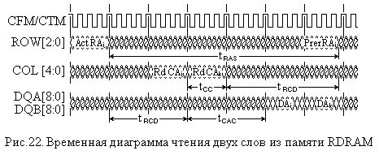

2.3.5. Динамическая память RDRAM
Память RDRAM (Rambus DRAM) построена на таких же элементах памяти, как и рассмотренные выше виды динамической памяти. Она относится к тому направлению разработок, в котором производительность памяти (ее пропускная способность, вычисляемая как произведение разрядности шины данных и частоты передачи по ней) достигается за счет увеличения частоты, при уменьшении разрядности шины данных. Последнее обстоятельство способствует снижению взаимных помех от проводников шины, особенно сказывающихся на высоких частотах.
Таким образом, для этого типа памяти характерен свой интерфейс, существенно отличный как логически, так и электрически от интерфейса асинхронных и синхронных DRAM. Шина данных RDRAM имеет 16 разрядов и работает на частоте 400 Мгц и выше, используя сдвоенные передачи данных по обоим фронтам синхроимпульсов (как и DDR память). С учетом этого RDRAM обеспечивает пропускную способность 1600 Мбайт/с., что, по сравнению с DDR SDRAM, не так уж и много.
Определенное противостояние фирмы разработчика памяти RDRAM с разработчиками и изготовителями памяти SDRAM, имевшее место в конце 1990-х годов, привело к отказу многих производителей от использования RDRAM.
Память RDRAM, структура которой показана на рис. 21, включает в себя контроллер (RMC — Rambus Memory Controller), собственно микросхемы памяти, генератор синхросигналов (DRCG — Direct Rambus Clock Generator), источник питания и терминаторы, исключающие отражение сигналов на концах шин.
Контроллер позволяет использовать различные микросхемы в одном канале, суммируя общую емкость и банки памяти по всем микросхемам. Причем все микросхемы имеют многобанковую организацию (до 32 банков в 256-Мбитных микросхемах). Однако их архитектура может быть различной: со сдвоенными банками (doubled), с разделенными банками (splitted) и с независимыми банками (independent). Эти различия определяют особенности параллельной работы банков.
Во всех случаях разрядность данных микросхемы – 16 бит. Ядро (матрица) элементов памяти, разделенное на банки, имеет построчную организацию, в которой каждая строка разделена на так называемые “двойные восьмерки” (dualocts в терминологии Rambus) , состоящие из 16 байтов каждая. Например, микросхема памяти емкостью 256 Мбит может разделяться на 16 банков по 2 Мбайта, каждый их которых имеет 1024 строки, содержащих по 128 16-байтных двойных восьмерок. Такие двойные восьмерки представляют собой физически минимально адресуемые (внутри микросхемы) единицы данных.
Учитывая высокую частоту работы интерфейса Direct Rambus (именно таково его полное название, но слово Direct часто для краткости опускают), к его физической реализации предъявляются довольно жесткие требования. В частности, его линии должны идти строго параллельно и заканчиваться терминаторами (для подавления отраженных сигналов). Количество слотов для установки модулей памяти в каждом канале не может превышать трех, причем незадействованные слоты должны быть заполнены модулями-заглушками (dummy modules). В свою очередь, один модуль памяти может включать в себя от одной (на практике – от четырех) до 16 микросхем памяти при общей полной нагрузке в 32 устройства на канал. Регламентируется даже то, сколько раз модуль можно вставлять и вынимать из слота – до 25 раз.
Канал памяти имеет три шины: 3-битную шину строк ROW, 5-битную шину столбцов COL и двухбайтовую шину данных, состоящую из двух половинок – DQA и DQB. Кроме того, имеются также линии синхронизации, управляющих сигналов и напряжений питания. Интерфейс предусматривает параллельно-последовательную передачу данных пакетами из восьми посылок (передаваемых за 4 такта шины, т.е. за 10 нс при частоте 400 Мгц). Пакет строк, таким образом, состоит из 24 бит, столбцов – из 40 бит, а данных – из 16 байт (по 8 или 9, в случае контроля, бит каждый). Следует помнить, что это не те пакетные передачи, которые осуществляются в интерфейсе BEDO или SDRAM.
Допускается наращивание количества каналов, или, как говорят, масштабируемость памяти. Ведь разрядность данных системной шины данных, например, в ПЭВМ с процессорами семейства P6 – 64 разряда. К одному контроллеру можно подключать до 4-х каналов. Поэтому известны и модули с разрядностью более 16.
Временные диаграммы операций чтения и записи, называемых в RDRAM транзакциями, представлены на рис. 22 и 23, где CFM и CTM означают сигналы синхронизации от микросхем и от контроллера.

Как видно из рис. 22, транзакция чтения начинается с команды активации (Act) банка, содержащейся в пакете ROW со строкой адреса ai. По прошествии времени задержки tRCD пакетом COL с колонкой адреса ai выдается команда чтения (Rd) колонки. Адрес, передаваемый в пакете ROW, указывает микросхему, банк и строку, а адрес, передаваемый в пакете COW, указывает микросхему, банк и колонку.
После этого с задержкой tCAC микросхема выдает прочитанные данные. Отсчет времени на линиях ROW и COL производится по отношению к моментам окончания пакета, а на линиях данных – по отношению к началу пакета. Далее с задержкой tCC выдается вторая команда чтения (колонки) с адресом ak.
Затем подается команда подзаряда (Prer) банка, которая должна быть подана не ранее времени tRAS после команды активации банка (команда активации в любой синхронной динамической памяти, не только RDRAM, разрушает информацию, записанную в активируемой строке, разряжая все конденсаторы, поэтому их и приходится восстанавливать командой подзаряда банка). Кроме того, команда подзаряда не должна выдаваться ранее времени tRPD после предшествующей команды чтения.
Транзакция записи, представленная на рис. 23, начинается также, как и транзакция чтения, командой активации банка. За ней следует команда записи (Wr) колонки, подаваемая через интервал времени, равный tRCD − tRTR (времена отсчитываются от концов пакетов), данные для которой поступают на шины данных с задержкой tCWD, что отличается от SDRAM памяти, в которой такой задержки нет. Далее с задержкой tCC по отношению к первой команде выдается вторая команда записи колонки с адресом ak, а затем и данные для нее.
Спустя время задержки записи tRTR может быть подана необязательная команда маски записи (Msk), позволяющая производить побитное маскирование записи данных. Если команда маски не подается, то в этих же тактах данные записываются полностью. Наконец, спустя время tRTP после последней записи подается команда подзаряда строки банка.
Как видно, эти транзакции выполняются, в целом, аналогично тому, как и соответствующие операции в SDRAM. Однако имеется и ряд отличий.
Во-первых, транзакции RDRAM обрабатывают только одну передачу, т.е. 2 байта, а не пакет (от 8 до 64 байт как в SDRAM). Это позволяет упростить протокол шины, обеспечивая ее производительность за счет высокой частоты шины.
Во-вторых, передачи адресов и данных выполняются, как указано выше, параллельно-последовательно (занимая по четыре такта шины каждая), что показано на рис. 22 и 23 соответствующими переключениями сигналов. Пакеты, передаваемые по адресным шинам (ROW и COL), могут иметь различное назначение, задавая либо собственно адрес, либо команду. Сами команды (активация (строки) банка, запись, чтение, подзаряд и др.) аналогичны командам памяти SDRAM типа.
В-третьих, имеются особенности синхронизации для транзакций чтения, которые должны компенсировать различную физическую удаленность модулей памяти от контроллера и обеспечить одновременное поступление данных к контроллеру. Для этого приходится устанавливать различную задержку выдачи данных относительно адреса столбца для микросхем, находящихся на разном расстоянии от контроллера.
Также, как и SDRAM, память RDRAM допускает конвейерную обработку различных обращений. При полной занятости шины на ней может присутствовать до четырех транзакций, что при обращениях по последовательным адресам может обеспечить до 100% использования полосы пропускания шины данных.